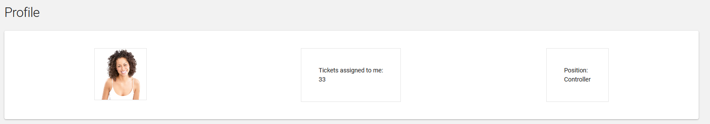

This is a software development exercise for a Raynet GmbH frontend
developer position.
This excercise is only for candidates who were invited from the
exercise beforehand. If you did not get invited please do not take this
exercise.
Task
You are building a web-page to show the tasks of a workflow management
system.
Update the registration screen:
We need the following inputs from the users:
Email
Password
Display name (Max length of 15 characters)
Phone number in an international plus prefixed format, like
+49 151 240 123 87
Add validators to the inputs
Bad email
Password missmatch
Bad phone number
Registration success - Show toast/notification message (Toast component)
Any other validation you know needs to be done on normal
registration form
Think phone number input UX. A phone number widget must have a
good UX for global visitors who might lack an understanding what
phone number country code is. Feel free to use your favorite phone
number widget if neccessary.
Add the phone number to the existing profile page, so that users
can see the phone number associated with their account.
Update the profile screen:
Add a display name field after the ID field and make it readonly.
Add a phone number field after the last name field and make it readonly.
Update the profile view stylings
The styling of the profile page is ugly, please improve the styling in a reuseable way, in case we want to have the same styling somewhere else. Currently it looks like this:

Find and fix other bugs that prevent the website from going online. Furthermore, you can do small improvements to the structure or code.
Which improvements would you suggest to improve the further development when the project grows?